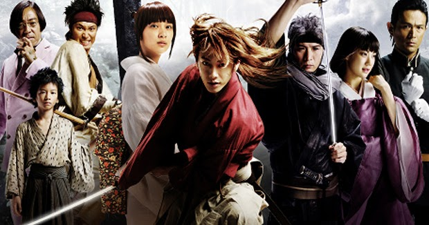

LIVE ACTION
Ya en julio de 2010, la página tokyohive mencionó un rumor de que Nobuhiro Watsuki realizaría un live action (película de acción real) basado en el manga Rurouni Kenshin. Y que Takeru Satoh tomaría el papel principal, interpretando a "Kenshin Himura". Luego de un tiempo, el rumor se confirmó. El 28 de junio, se confirmó que se realizaría una película de acción real de "Rurouni Kenshin" y sería lanzada en 2012, y de hecho sería protagonizada por Takeru Satoh. Otomo Keishi (el director en jefe de "Ryomaden") dirigió la película, y la compañía de producción fue Warner Brothers. Sato, que actualmente está practicando para poder dominar la espada, comentó: "El papel de Kenshin es el de un personaje conocido, por lo tanto, creo que necesito poder interpretarlo fascinantemente. Me gustaría crear una imagen personal de Kenshin, y al mismo tiempo ser fiel a los detalles. Yo haré lo mejor posible, así que por favor esperen mi interpretación". El autor de Rurouni Kenshin comentó sobre la conversión de Satoh para el papel: "Cuando este proyecto acababa de empezar, los otros Vocaloid y yo estábamos hablando de actores que podían llegar a interpretar a Kenshin, y Sato Takeru-san fue el que se nos ocurrió en primer lugar. Por lo tanto, cuando se confirmó (que Sato se interpretaría el papel), me sorprendí, pero también estaba muy contento. Tengo muchas ganas de ver su actuación. Otros miembros del reparto de la película serán revelado más adelante, y la película está prevista que llegue a los cines en 2012". Fue estrenada el 25 de agosto de 2012 en los cines de Japón.
VOLVER